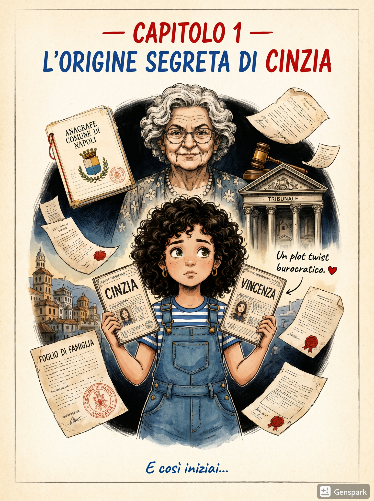

CAP. 1
Origin story
L'origine segreta di Cinzia
Alcuni supereroi scoprono la propria identità dopo un morso radioattivo. Altri la scoprono all'anagrafe. Un'origine story decisamente più burocratica che Marvel.